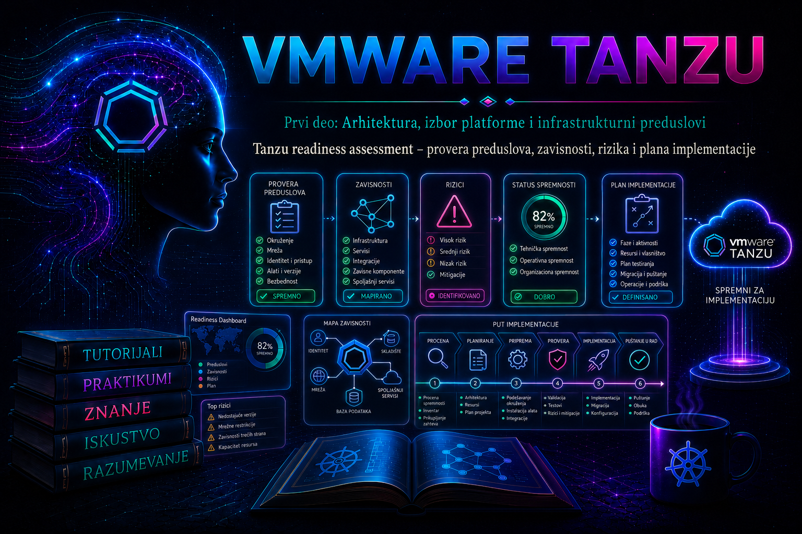

VMware & Tanzu

Prethodne tri lekcije izdvojile su tehničke uslove koje vSphere Supervisor i vSphere Kubernetes Service (VKS) očekuju od klastera, mreže, skladišta, DNS-a, NTP-a, IPAM-a i PKI infrastrukture. Readiness assessment te nalaze pretvara u kontrolisanu odluku o implementaciji. Njegov rezultat nije utisak da je okruženje „uglavnom spremno”, već skup proverljivih dokaza, evidentiranih odstupanja, imenovanih vlasnika, rokova i formalna odluka Go, Conditional Go ili No-Go.
Assessment se završava pre aktiviranja Workload Management funkcionalnosti. On ne zamenjuje ugrađeni Supervisor pre-check, pilot niti post-deployment validaciju: pre-check potvrđuje ono što proizvod može automatski da proveri u konkretnom trenutku, dok assessment obuhvata i kapacitet, organizacione zavisnosti, bezbednosne odluke, operativnu spremnost, rollback, odgovornosti i budući životni ciklus. Uspešan čarobnjak nije dokaz da će platforma biti održiva u produkciji.
Cilj, opseg i merljivi izlazi readiness assessment-a
Najpre se definiše šta se procenjuje: tačan vCenter Server, datacenter, klaster ili zone, ciljno izdanje vSphere/VCF-a, mrežni model, load balancer, storage politike, planirani Supervisor servisi, VKS klasteri i očekivane vrste workload-a. Bez zamrznutog opsega isti nalaz može istovremeno biti tačan za laboratoriju i pogrešan za produkciju.
| Izlaz | Minimalni sadržaj | Dokaz prihvatanja |
|---|---|---|
| Scope statement | Ciljna verzija, lokacije, klasteri, mrežni i storage model, workload profil i granice odgovornosti | Odobren dokument sa vlasnicima infrastrukture, platforme, mreže i bezbednosti |
| As-built inventar | Stvarno stanje komponenti, verzija, licenci/subscription prava, firmware-a, drajvera, kapaciteta i konfiguracije | Izvozi iz vCenter-a i povezanih sistema, sa datumom i izvorom |
| Requirements traceability matrix | Veza između zahteva proizvođača, poslovnog zahteva, kontrole, rezultata i dokaza | Svaki obavezni zahtev ima PASS, FAIL, WARN ili N/A i obrazloženje |
| Risk register | Rizik, verovatnoća, uticaj, vlasnik, tretman, rok, rezidualni rizik i kriterijum zatvaranja | Prihvatanje rizika od ovlašćenog vlasnika, ne samo tehničkog izvođača |
| Implementation package | Low-level design, adresni plan, redosled, change record, backup, rollback, validacija i komunikacija | Uspešan peer review i odobren prozor promene |
| Go/No-Go zapis | Odluka, uslovi, otvorene blokade, potpisnici i datum važenja dokaza | Formalno odobrenje pre promene produkcionog stanja |
Dokaz mora biti ponovljiv. Snimak ekrana bez naziva objekta, vremena i konteksta slabiji je od eksportovanog izveštaja ili read-only komande. Tajne, privatni ključevi, tokeni i kompletni kubeconfig fajlovi ne pripadaju assessment paketu; dokaz treba redigovati i čuvati u repozitorijumu sa kontrolom pristupa i rokom zadržavanja.
Verzijska, licencna i kompatibilnosna osnova
Nazivi proizvoda i podržane topologije menjali su se kroz izdanja. U vSphere 8 dokumentaciji sreću se vSphere with Tanzu, Workload Management, Tanzu Kubernetes Grid Service i TKG klasteri; aktuelni naziv tenant Kubernetes servisa je VKS. VCF 9.x uvodi sopstvene tokove, uključujući pojednostavljenu implementaciju u određenim izdanjima, i proširuje izbor mrežnih modela. Zato se readiness baza uvek vezuje za precizan build, izdanje dokumentacije i planirani datum implementacije.
- Proveriti da su vCenter Server, ESXi, vSphere Distributed Switch, NSX/Avi komponente i dodatni servisi u međusobno podržanoj kombinaciji.
- Proveriti VMware Compatibility Guide za servere, I/O uređaje, firmware i drajvere, a ne samo da li ESXi trenutno radi.
- Potvrditi pravo korišćenja funkcija u ciljnom licencnom ili subscription modelu; postojanje stavke u interfejsu nije dokaz prava ni podrške.
- Za postojeći Supervisor i plan nadogradnje proveriti kompatibilnost ciljne Supervisor Kubernetes verzije sa svim postojećim VKS/TKr izdanjima.
- Za standardne pakete kasnije se proverava kompatibilnost sa Kubernetes verzijom VKS klastera, ne samo sa verzijom vSphere-a.
Model procene: domeni, statusi i kvalitet dokaza
Svaka kontrola treba da ima identifikator, zahtev, način provere, očekivani rezultat, stvarni rezultat, dokaz, vlasnika i datum. Status PASS znači da je kriterijum ispunjen dokazom; FAIL označava blokirajuće odstupanje; WARN prihvatljivo odstupanje ili preostali rizik; N/A mora imati obrazloženje. „Nije provereno” nije isto što i N/A.
| Domen | Ključna pitanja | Primer dokaza |
|---|---|---|
| Governance i opseg | Ko je vlasnik platforme, ko odobrava rizik, koji RPO/RTO i SLO se očekuju? | RACI, scope, service definition, change i incident procedure |
| Compute i vSphere | Da li su build-ovi podržani, HA/DRS i admission control projektovani, a failure domains realni? | Inventar klastera, health/compliance izveštaji, HCL provera |
| Kapacitet | Postoji li rezervni kapacitet za Supervisor, VKS, rast, kvar hosta i održavanje? | Model vršnog opterećenja, N+1/N+2 scenario i trendovi |
| Mreža i load balancing | Da li su VLAN/VDS/NSX/Avi dizajn, MTU, routing, firewall, NAT i IP opsezi end-to-end validirani? | Adresni plan, matrica tokova, testovi DNS/TCP/MTU i konfiguracioni izvoz |
| DNS, NTP, IPAM i PKI | Postoje li forward/reverse zapisi, zajednički izvori vremena, vlasništvo nad adresama i kompletan trust chain? | Upiti iz relevantnih zona, NTP stanje, IPAM rezervacije, pregled SAN/EKU/isteka |
| Storage | Postoje li odgovarajuće storage politike, dostupnost, kapacitet i podrška za planirane workload-e? | SPBM/policy pregled, datastore trendovi, VASA/health i failure test |
| Identity i bezbednost | Kako se razdvajaju dužnosti, identiteti, privilegije, tajne, audit i mrežne zone? | RBAC matrica, service accounts, firewall rules, audit i hardening zapis |
| Operacije | Ko prati zdravlje, radi backup/restore, patching, sertifikate i reaguje na incidente? | Runbook-ovi, alert routing, restore dokaz, dežurstvo i eskalacija |
| Životni ciklus | Postoji li podržan redosled nadogradnje i politika Kubernetes verzija? | Release matrica, upgrade plan, maintenance window i rollback granice |
Inventar i read-only tehnička provera
Inventar se prikuplja pre intervencije i označava vremenom. PowerCLI se izvršava sa administratorske radne stanice ili kontrolisanog automation hosta, nalogom koji ima samo potrebne read-only privilegije. Sledeći primer ne menja stanje; nazive servera i klastera treba prilagoditi okruženju, a izlaz čuvati bez kredencijala.
$vc = "vcsa01.example.com"
$clusterName = "TANZU-COMP-01"
Connect-VIServer -Server $vc
$cluster = Get-Cluster -Name $clusterName
$cluster | Select-Object Name,
@{N="HAEnabled";E={$_.HAEnabled}},
@{N="DrsEnabled";E={$_.DrsEnabled}},
@{N="DrsAutomationLevel";E={$_.DrsAutomationLevel}}
$cluster | Get-VMHost | Select-Object Name,ConnectionState,PowerState,
Version,Build,Manufacturer,Model,NumCpu,CpuTotalMhz,MemoryTotalGB
$cluster | Get-Datastore | Select-Object Name,Type,CapacityGB,FreeSpaceGB
$cluster | Get-VirtualSwitch -Distributed | Select-Object Name,Version,Mtu
Get-WMCluster -Cluster $cluster -ErrorAction SilentlyContinue
Disconnect-VIServer -Server $vc -Confirm:$falseGet-WMCluster vraća konfiguraciju Workload Management-a kada ona postoji; odsustvo rezultata na klasteru koji još nije aktiviran nije samo po sebi greška. Cmdlet-i Enable-WMCluster, Set-WMCluster i Disable-WMCluster menjaju stanje i ne pripadaju read-only assessment fazi. Njih ne treba uključivati u skriptu za inventar.
Za klaster kojim upravlja vSphere Lifecycle Manager dodatno se proveravaju health, desired image compliance i hardverska kompatibilnost. Provera treba da bude odvojena od remediation-a: generisanje preporuke ili primena image-a može pokrenuti širi lifecycle tok i zahteva zaseban change.
$cluster = Get-Cluster -Name "TANZU-COMP-01"
Test-LcmClusterHealth -Cluster $cluster
Test-LcmClusterCompliance -Cluster $cluster
Get-LcmHardwareCompatibility -Cluster $clusterAko organizacija koristi VCF Diagnostic Tool for vSphere, njegovi PASS/FAIL/WARN rezultati mogu dopuniti dokaznu osnovu za vCenter i povezane proizvode. Alat se izvršava prema važećem Broadcom KB postupku, u odobrenom prozoru i sa prethodnim pregledom obima; on ne zamenjuje specifičan Supervisor pre-check niti stručnu interpretaciju nalaza.
Compute, dostupnost i kapacitet pod kvarom
Kapacitet se ne ocenjuje prema trenutnom proseku. Model mora obuhvatiti Supervisor control plane VM-ove, VKS control plane i worker VM-ove, load balancer/NSX komponente kada postoje, image pull i upgrade pikove, rezervu za rast i stanje tokom gubitka najvećeg failure domain-a. DRS olakšava raspoređivanje, ali ne stvara fizički kapacitet; HA restart bez admission control discipline može ostati samo najbolji pokušaj.
Za svaki resurs beleže se raspoloživo stanje, rezervisano stanje, vršni zahtev i rezerva posle kvara. Overcommit prihvatljiv za opšte VM workload-e ne mora biti prihvatljiv za Kubernetes control plane. NUMA, CPU ready, ballooning, swapping, datastore latencija i mrežna zagušenja posmatraju se zajedno, jer „dovoljno GHz i GB” ne dokazuje kvalitet servisa.
upotrebljivi_kapacitet_posle_kvara
= fizički_kapacitet
- rezervacija_infrastrukture
- kapacitet_izgubljenog_failure_domain-a
- operativna_rezerva
PASS ako je:
upotrebljivi_kapacitet_posle_kvara >= vršni_zahtev_platforme_i_workload-aAko uslov nije ispunjen, korektivne mogućnosti su smanjenje početnog opsega, dodavanje hostova, preraspodela workload-a ili izmena SLO-a uz formalno prihvatanje. Privremeno isključivanje HA admission control-a da bi se prošao pre-check nije korektivna mera.
Mrežna spremnost i dokazivanje tokova
Odabrani mrežni model određuje preduslove. Assessment mora eksplicitno navesti da li se koristi vSphere networking, NSX networking, VCF 9.x varijanta ili podržani Avi/NSX Advanced Load Balancer tok. Svi hostovi ciljnog klastera moraju imati konzistentnu vezu ka odgovarajućem distribuiranom switch-u i port grupama. MTU se proverava end-to-end kroz fizičke switch-eve, uplink-ove, overlay/underlay i gateway-e; vrednost na samom VDS-u nije dovoljan dokaz.
| Tok | Šta dokazati | Tipična posledica greške |
|---|---|---|
| Administrator → vCenter/Supervisor API | DNS, TLS trust, TCP dostupnost i autorizacija | Neuspešan login, kubectl ili automatizacija |
| Supervisor control plane → DNS/NTP/registry | Routing, firewall, proxy/no-proxy i validan trust chain | Inicijalizacija zastaje, image pull ili sertifikati otkazuju |
| VKS čvorovi → API i registries | Podržani egress, DNS i MTU | Čvorovi nisu Ready, paketi i workload-i se ne preuzimaju |
| Klijent → ingress/load balancer VIP | Route advertisement ili statičke rute, firewall i IP vlasništvo | Servis postoji, ali nije dostupan korisniku |
| Čvorovi → storage endpoint-i | VLAN/routing, latency i dozvoljeni portovi | Attach/mount zastoji i stateful incidenti |
Test se izvodi iz mrežne zone iz koje će stvarna komponenta komunicirati. Uspešan nslookup sa administratorskog laptopa ne dokazuje rezoluciju sa management ili workload mreže.
# Read-only provere sa odobrene Linux jump stanice u relevantnoj zoni
dig +short vcsa01.example.com A
dig +short -x 192.0.2.10
curl --fail --silent --show-error --connect-timeout 5 \
https://vcsa01.example.com/ui/ -o /dev/null
openssl s_client -connect vcsa01.example.com:443 \
-servername vcsa01.example.com -showcerts </dev/null
# TCP test; ne dokazuje aplikativnu ispravnost, samo dostupnost porta
nc -vz -w 5 registry.example.com 443openssl s_client može prikazati javni sertifikatski lanac, ali izlaz može sadržati infrastrukturne detalje; čuva se kontrolisano. curl -k se ne koristi kao dokaz poverenja jer zaobilazi validaciju sertifikata. ICMP nije zamena za TCP/aplikativni test, a port scan širokog opsega zahteva odobrenje bezbednosnog tima.
DNS, NTP, IPAM i sertifikati kao gate kriterijumi
Lekcija 11 obradila je ove servise pojedinačno; readiness ih sada posmatra kao zajednički lanac zavisnosti. FQDN mora da se rezolvuje iz svake relevantne zone, reverse DNS mora odgovarati politici i proizvodnim zahtevima, NTP izvori moraju biti dostupni svim komponentama, a IP opsezi moraju biti jedinstveni, nerutirani ili rutirani u skladu sa dizajnom i rezervisani u IPAM-u.
- Odvojiti management, ingress/VIP, workload/node i service/pod opsege prema izabranom modelu; zabraniti preklapanje sa postojećim mrežama, VPN-ovima i udaljenim lokacijama.
- Ne računati samo broj adresa za početno stanje: uključiti upgrade, zamenu čvora, paralelni rollout, rast i operativnu rezervu.
- Za svaki sertifikat evidentirati subject/SAN, issuer, EKU, algoritam, ceo chain, datum isteka, vlasnika i postupak rotacije.
- Potvrditi distribuciju interne CA ka administratorima, automation hostovima, registry-jima i drugim potrošačima.
- U kalendar promena uneti rok za obnovu znatno pre isteka; „sertifikat je danas validan” nije dokaz operativne spremnosti.
Storage, politike i oporavak
Readiness potvrđuje da postoje storage politike kompatibilne sa Supervisor komponentama i planiranim VKS/stateful workload-ima, da datastores imaju kapacitet i prihvatljive performanse i da su VASA/provider zavisnosti zdrave. Naziv politike nije dokaz njene namene: proveravaju se pravila, kompatibilni datastores, failure domains, enkripcija kada se zahteva i ponašanje tokom maintenance-a.
Backup vCenter-a nije isto što i zaštita VKS podataka, persistent volume-a, registry-ja i aplikativnog stanja. Assessment mora evidentirati šta se štiti, kojim alatom, RPO/RTO, gde se kopija nalazi, ko može da je obnovi i kada je poslednji restore stvarno izveden. Detaljna storage topologija i backup/restore biće obrađeni u kasnijim lekcijama; ovde su oni gate kriterijum dizajna.
Identitet, privilegije i bezbednosna spremnost
Implementacioni nalog, operativni nalog i automation service account ne treba da budu isti identitet. Privilegije se mapiraju na fazu i zadatak, odobravaju vremenski kada je moguće i evidentiraju audit tragom. Shared administratorski nalozi otežavaju atribuciju i ne smeju postati trajna prečica.
Bezbednosni assessment uključuje najmanje zoniranje, ingress i egress politiku, administrativni pristup, MFA gde ga identitetski sistem podržava, tajne, CA trust, registry politiku, image provenance, ranjivosti, audit logove i postupak opoziva pristupa. Ako se koristi NSX, treba eksplicitno potvrditi model segmentacije i vlasništvo nad pravilima; ako se koristi vSphere networking, ne pretpostavljati da Kubernetes NetworkPolicy sama rešava sve infrastrukturne granice.
Operativna spremnost i životni ciklus
Platforma nije spremna ako može da se instalira, ali niko nije odgovoran za njeno održavanje. Pre Go odluke moraju postojati monitoring i alert routing, pragovi i SLO, on-call/eskalacioni lanac, backup i restore runbook, certificate lifecycle, patching politika, upgrade redosled, capacity review, incident procedura i evidencija promena.
Plan nadogradnje obuhvata vCenter/ESXi/NSX/Avi, Supervisor, VKS izdanja, standardne pakete i aplikativne zavisnosti. Kompatibilnost se proverava u oba smera: ciljna platforma mora podržati postojeće klastere, a aplikacije moraju podržati ciljnu Kubernetes verziju. Rollback Kubernetes i infrastrukturnih upgrade-a često nije prost povratak snapshot-a; zato se unapred definišu podržane recovery granice i tačka posle koje se primenjuje forward-fix ili restore.
Registar rizika i odluka Go, Conditional Go ili No-Go
Rizik se ne zatvara tvrdnjom „tim će paziti”. Tretman mora menjati verovatnoću ili uticaj, imati vlasnika, rok i dokaz. Tehnički tim može predložiti prihvatanje, ali poslovni ili servisni vlasnik prihvata rezidualni rizik koji utiče na dostupnost, podatke, bezbednost ili trošak.
| Odluka | Kriterijum | Dozvoljena akcija |
|---|---|---|
| Go | Sve blokirajuće kontrole PASS; preostali rizici formalno prihvaćeni; implementacija, validacija i rollback odobreni | Implementacija u odobrenom prozoru |
| Conditional Go | Nema neublaženog kritičnog rizika; preostali uslovi imaju vlasnika, rok i proverljiv guardrail | Samo definisani opseg/pilot; automatski stop ako uslov nije ispunjen |
| No-Go | Nepodržana kombinacija, preklapanje adresa, nedovoljan kapacitet pod kvarom, nevalidan trust, nepostojeći rollback ili drugi kritični FAIL | Ne aktivirati Supervisor; sprovesti remediation i ponoviti pogođene kontrole |
Dokazi imaju rok važenja. Promena build-a, firmware-a, VDS/NSX dizajna, adresnog plana, sertifikata, kapaciteta ili obima zahteva delta assessment. Go odluka stara nekoliko meseci ne može automatski da odobri implementaciju u promenjenom okruženju.
Plan implementacije, validacije i rollback-a
- Zamrznuti baseline: sačuvati inventar, konfiguracione izvoze, alarme i relevantne metrike; proveriti konzistentan backup i mogućnost restore-a.
- Zatvoriti zavisnosti: DNS/IPAM/PKI tiketi, firewall pravila, VLAN/rute, storage politike, nalozi i licence moraju imati potvrđene vlasnike.
- Definisati redosled: infrastrukturne promene, pre-check, aktiviranje Supervisor-a, health validacija, namespace/policy minimum, pilot VKS i aplikativni smoke test.
- Postaviti hold points: posle svake nepovratne ili teško reverzibilne faze tim proverava kriterijume i odlučuje da li nastavlja.
- Definisati rollback: okidač, poslednja bezbedna tačka, vlasnik odluke, podržani postupak i procenjeno trajanje; snapshot vCenter-a nije univerzalni rollback plan.
- Komunicirati: uticaj, maintenance window, kontakt, status intervali i zatvaranje promene.
Plan mora razlikovati validaciju kontrole i validaciju servisa. Kontrola potvrđuje da su objekti zdravi; servisna validacija potvrđuje da ovlašćeni korisnik može da dobije kubeconfig, kreira pilot klaster, povuče image, izloži testni servis, koristi persistent storage kada je u opsegu i da monitoring registruje događaj.
Praktikum: izrada dokazivog readiness paketa
Cilj: proceniti laboratorijski klaster za buduću Supervisor implementaciju, prikupiti read-only dokaze, evidentirati rizik i doneti uslovnu odluku bez aktiviranja Workload Management-a. Topologija sadrži jedan vCenter, jedan ciljni vSphere klaster, VDS, najmanje jedan datastore/storage policy kandidat, DNS/NTP i administratorsku Linux ili PowerCLI jump stanicu.
Preduslovi i privilegije: read-only vCenter nalog sa pristupom ciljnom inventaru, PowerCLI, DNS/TLS alati i odobren pristup relevantnim mrežama. Za ugrađeni pre-check kasnije je potreban nalog sa odgovarajućim Workload Management privilegijama, ali u ovoj vežbi ne izvršava se aktiviranje. Rizik je nizak jer se stanje ne menja; ipak, izlazi mogu sadržati nazive i adresne podatke i čuvaju se kontrolisano.
Vežba 1 – Scope, baseline i matrica kontrola
- Zapišite ciljno izdanje i build, klaster, mrežni model, planirani load balancer, broj početnih VKS klastera, workload profil, RPO/RTO i vlasnike.
- Napravite matricu sa kolonama
ID,Domain,Requirement,Method,Expected,Actual,Status,Evidence,OwneriRetest date. - Pokrenite read-only PowerCLI inventar iz ove lekcije i sačuvajte izlaz sa UTC vremenom. Ne unosite lozinku u skriptu.
- Uporedite verzije i hardver sa zvaničnom kompatibilnošću za ciljno izdanje. URL i datum provere evidentirajte u radnom zapisu, ali ne kopirajte marketinški rezime kao dokaz.
Očekivani rezultat: svaki objekat ima nedvosmislen naziv, verziju/build i vlasnika, a nepoznate vrednosti su označene kao otvorena pitanja. Kriterijum završetka: nema kontrole bez metode i vlasnika.
Vežba 2 – Validacija ključnih zavisnosti
- Iz odgovarajuće management mrežne zone proverite forward i reverse DNS za vCenter, registry i druge ciljne endpoint-e.
- Proverite TCP/TLS konekciju bez isključivanja provere sertifikata; zabeležite issuer, SAN i istek, bez čuvanja tajni.
- Uporedite NTP izvore vCenter-a, hostova i infrastrukturnih servisa. Toleranciju definišite prema proizvodu i organizacionoj politici.
- U IPAM-u rezervišite ili bar označite predložene opsege i izvršite pretragu preklapanja sa lokalnim, VPN i udaljenim mrežama.
- Potvrdite VDS/port group vezu svih hostova, MTU i putanju do gateway-a/load balancer-a. Ne menjajte MTU tokom testa.
- Pregledajte storage politike i kompatibilne datastores, slobodan kapacitet, health i plan zaštite.
Validacija: za svaku proveru priložite komandu ili izvor, vreme, očekivani i stvarni rezultat. PASS se ne dodeljuje ako je test izveden iz pogrešne mrežne zone. Ako test nije moguć zbog neodobrenog firewall pravila, status je FAIL ili BLOCKED prema lokalnom procesu, nikako PASS „na osnovu dizajna”.
Vežba 3 – Kontrolisana greška i troubleshooting
Scenario: u lokalnom /etc/hosts fajlu laboratorijske jump stanice privremeno se postavlja pogrešna adresa za testni FQDN, bez menjanja produkcionog DNS-a. Ovo je bezbedna simulacija ograničena na jednu stanicu.
- Pre promene sačuvajte postojeći rezultat
digi TLS testa. - Koristite isključivo namenski laboratorijski naziv. Ne menjajte vCenter zapis i ne brišite DNS zonu.
- Potvrdite simptom: hostname se razrešava na pogrešnu adresu; TCP/TLS test otkazuje ili vraća neočekivani endpoint.
- Odredite obim: proverite isti naziv sa drugog klijenta i direktnim upitom ka autoritativnom DNS serveru. Ako je problem samo na jump stanici, hipoteza je lokalni override/cache.
- Prikupite dokaz pre korekcije, uklonite samo dodatu laboratorijsku liniju i ponovite testove.
# Read-only dijagnostika lokalnog resolvera
getent hosts lab-endpoint.example.com
dig lab-endpoint.example.com A
grep -n "lab-endpoint.example.com" /etc/hosts
# Posle uklanjanja isključivo laboratorijskog unosa
getent hosts lab-endpoint.example.com
openssl s_client -connect lab-endpoint.example.com:443 \
-servername lab-endpoint.example.com </dev/null| Element incidenta | Nalaz |
|---|---|
| Simptom | TLS/TCP test ide ka pogrešnoj adresi |
| Obim i posledica | Jedna jump stanica; assessment dokaz sa nje nije pouzdan |
| Neposredni uzrok | Lokalni /etc/hosts override |
| Osnovni uzrok | Nekontrolisana lokalna konfiguracija/testni postupak |
| Privremeni workaround | Koristiti drugu odobrenu stanicu samo radi nastavka prikupljanja dokaza |
| Trajna mera | Ukloniti override, standardizovati jump host i uključiti proveru lokalnih resolver izvora |
Rollback: vratiti tačno sačuvanu prethodnu verziju lokalnog unosa i potvrditi da drugi nazivi nisu promenjeni. Kriterijum završetka: oba klijenta daju isti očekivani odgovor, TLS endpoint odgovara FQDN-u, a rizik i korekcija su evidentirani.
Vežba 4 – Go/No-Go review i implementation handoff
- Klasifikujte sve kontrole i izdvojite blokirajuće FAIL nalaze.
- Za svaki WARN/FAIL napravite rizik sa vlasnikom, rokom, tretmanom, rezidualnim rizikom i retest kriterijumom.
- Napravite redosled implementacije sa hold point-ima: baseline, ugrađeni pre-check, Supervisor activation, health, pilot VKS, smoke test i monitoring.
- Definišite stop uslove: nov kritičan alarm, gubitak vCenter/host/storage zdravlja, neusklađen DNS/TLS, neuspešan pre-check ili odstupanje od odobrenog adresnog plana.
- Održite peer review sa platformskim, mrežnim, storage, bezbednosnim i operativnim vlasnikom.
Očekivani rezultat: odluka je zasnovana na dokazima. U laboratorijskom primeru lokalni DNS override je uklonjen, ali odluka ostaje Conditional Go dok se ne potvrde produkcioni firewall tokovi i formalna IPAM rezervacija. Kriterijum završetka: nijedna blokada nema neimenovanog vlasnika i implementacioni tim zna tačno kada mora da zaustavi promenu.
Tipični neuspešni obrasci i korektivne mere
| Obrazac | Zašto je opasan | Korektivna mera |
|---|---|---|
| „Pre-check je zelen, spremni smo” | Ne pokriva SLO, operacije, rast, restore i sve spoljne zavisnosti | Koristiti ga kao jedan dokaz u široj matrici |
| Copy/paste starog BoM-a | Verzije, licence i podržane topologije su se promenile | Zaključati ciljnu verziju i ponovo proveriti zvanične matrice |
| Test samo sa admin laptopa | Ne predstavlja putanju control plane-a ili VKS čvorova | Testirati iz svake relevantne mrežne zone |
| Kapacitet bez failure scenarija | Platforma radi samo dok nema kvara ili maintenance-a | Modelovati najveći failure domain i operativnu rezervu |
| Snapshot kao jedini rollback | Distribuirano stanje može postati nekonzistentno; postupak možda nije podržan | Koristiti proizvodno podržan backup/restore i fazne hold point-e |
| Privremeno pravilo bez roka | Workaround postaje trajna bezbednosna rupa | Vlasnik, rok, automatski expiry gde postoji i retest |
Administratorske prakse
- Prikupljaj dokaze pre promene stanja i čuvaj ih sa vremenom, izvorom i identitetom objekta.
- Odvoji inventar, validaciju i remediation; read-only assessment skripta ne treba da sadrži state-changing cmdlet-e.
- Veži svaki zahtev za preciznu verziju dokumentacije i ponovi proveru posle promene opsega ili build-a.
- Testiraj zavisnosti iz perspektive komponente koja će ih koristiti, ne samo sa administratorske stanice.
- Ne prihvataj kapacitet koji postoji samo u normalnom stanju; izračunaj ponašanje tokom kvara, održavanja i upgrade-a.
- Za svaki izuzetak definiši vlasnika, rok, guardrail, retest i formalno prihvatanje rezidualnog rizika.
- Rediguj tajne iz dokaza i primeni kontrolu pristupa, integritet i politiku zadržavanja assessment paketa.
- Planiraj životni ciklus i restore pre instalacije; platforma bez održavanja i oporavka nije spremna.
Završna kontrolna tačka
Po završetku lekcije administrator treba da ume da:
- ✓ definiše precizan opseg, ciljnu verziju i merljive izlaze readiness assessment-a;
- ✓ razlikuje dokumentacionu proveru, read-only inventar, ugrađeni pre-check, pilot i post-deployment validaciju;
- ✓ izgradi traceability matricu sa dokazima, vlasnicima i rokom važenja;
- ✓ proveri kompatibilnost, kapacitet pod kvarom, mrežne tokove, DNS/NTP/IPAM/PKI i storage politike;
- ✓ prepozna verzijski i licencno uslovljene razlike između vSphere 8 i VCF 9.x tokova;
- ✓ prikuplja PowerCLI i CLI dokaze bez menjanja stanja i bez izlaganja tajni;
- ✓ razloži incident na simptom, obim, uzrok, workaround, trajnu meru i validaciju;
- ✓ vodi registar rizika i obrazloži Go, Conditional Go ili No-Go odluku;
- ✓ pripremi implementacioni redosled, hold point-e, stop uslove, validaciju i podržan rollback.
Zaključak
Tanzu readiness assessment je arhitektonska i operativna kontrola promene, a ne administrativna formalnost. On povezuje podržanu verzijsku osnovu, stvarno stanje infrastrukture, kapacitet pod kvarom, mrežne i servisne zavisnosti, bezbednosne kontrole, operativno vlasništvo i plan životnog ciklusa u jednu proverljivu odluku. Dobar assessment ne obećava odsustvo kvara; on pokazuje da su poznati rizici vidljivi, da kritične pretpostavke imaju dokaze, da tim zna kada mora da stane i da postoji bezbedan put ka validaciji ili oporavku.
Time je završena procena i priprema VMware infrastrukture. Sledeća lekcija prelazi na planiranje konkretne Supervisor implementacije – izbor klastera i zona, mreža, storage-a i upravljačkih adresa – koristeći upravo odobrene nalaze i ograničenja iz readiness paketa.